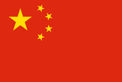
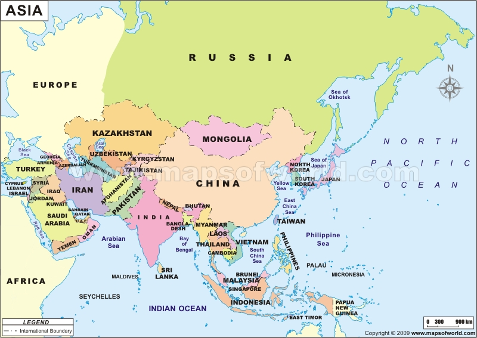

ASIA
|
CHINA
|
|

|
| Area |
9,596,960Sq mi |
|
Population
|
1,313,973,713
|
|
Capital
|
Beijing
|

Asia is the largest and most populous continent in the world. Culturally diverse and
historically rich, Asian countries has been home to number of world leaders. There
are 44 countries, which make up the continent of Asia. China, India, Japan and Sri
Lanka are the leading nations of this continent. All the countries of Asia Continent
are culturally rich and diverse in nature. China is the largest country in terms of
area. It is also the most populous country not only in Asia but also in the world. Asia
continent is bound by the Pacific Ocean in the east, Europe in the west,
Mediterranean Sea and Black Sea in the southeast. The Arctic Ocean borders Asia
in the north while the Bering Strait separates the continent from North America in
the north east. The Indian Ocean to the south of the continent separates it from
Australia.
|
TOP FIVE POPULOUS COUNTRIES
|
China
|
India
|
Indonesia
|
Pakistan
|
Bangladesh
|